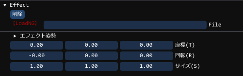

ComponentEffectとは
エフェクトを表示することができるコンポーネントですGUIには、以下の機能があります

| File | Effekseerのファイルを指定できます。 |
|---|---|
| エフェクト姿勢 | エフェクトそのもののオフセット座標・回転・スケールを設定できます |
ComponentEffectの使用方法
エフェクトの作成方法の例
// 初期作成でロードしない
auto effect = obj->AddComponent<ComponentEffect>();
// 初期作成と同時にロードする例(Effekseerのエフェクトファイルを指定できます)
auto effect = obj->AddComponent<ComponentEffect>( "data/Sample/Effects/Laser01.efkefc" );
モデルの取得方法の例
if ( auto effect = obj->GetComponent<ComponentEffect>() )
{
// オブジェクトにAddComponentされている場合は、
// このスコープで、effectとして使用可能
// AddComponentされていなければ、このスコープは飛ばされて無視されます
}
途中でのモデルのロードの例
effect->Load( "data/Sample/Effects/Laser01.efkefc" ); // mv1のモデルを途中でロードします
エフェクトの再生
effect->Play(); // エフェクトを再生します
effect->Play(true); // エフェクトをループ再生します
エフェクトの再生スピードの設定の例
effect->SetPlaySpeed( 2.5f ); // エフェクトを再生スピードを2.5倍にします
エフェクトの再生スピードの取得(float)
speedに倍率が入ります
auto speed = effect->GetPlaySpeed();
エフェクトの再生中かどうか
再生しているとtrueになります。下の例では、「!」をつけて再生してないときをチェックしています
// ! をつけると not の意味
if ( !effect->IsPlaying() )
{
// エフェクトを再生していなければここに来ます
}
エフェクト再生のポーズと解除
effect->PlayPause(); // エフェクトの再生を止める
effect->PlayPause(); // エフェクトの再生解除
エフェクト再生のポーズと解除
if ( effect->IsPaused() )
{
//エフェクトが再生中断している場合はここに来る
}
エフェクトが有効か調べる
// ! をつけて有効でない場合を調べる
if ( !effect->IsValid() )
{
//有効でない、つまりエフェクトがロードされていない場合はここに来る
}
エフェクト再生時間の取得
// 再生開始からの時間を取得できます。
auto time = effect->GetEffectTime();
エフェクトのMatrix(位置・回転・スケール)を取得できます
auto mat = effect->GetMatrix();
エフェクトのワールド座標系Matrix(位置・回転・スケール)を取得できます
オーナーのObjectの位置に依存します。
auto mat = effect->GetWorldMatrix();
エフェクトの1フレーム前のワールド座標系Matrix(位置・回転・スケール)を取得できます
オーナーのObjectの位置に依存します。
auto mat = effect->GetOldWorldMatrix();
エフェクトの姿勢に関しましては、以下の内容で、transformとある部分を、effectに読み替えて使用します。
effectを作成、取得した後、以下のようにeffectのTransformにかかわる部分を取得できます。
objectのTrasformとは別に存在し、objectの動作にも影響し、さらにその子供のような動作をします。
Transform機能(ComponentTransform)